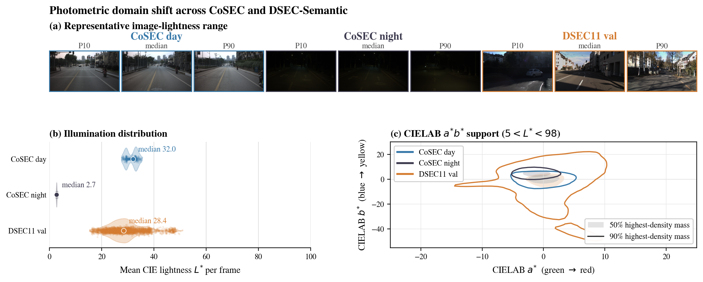
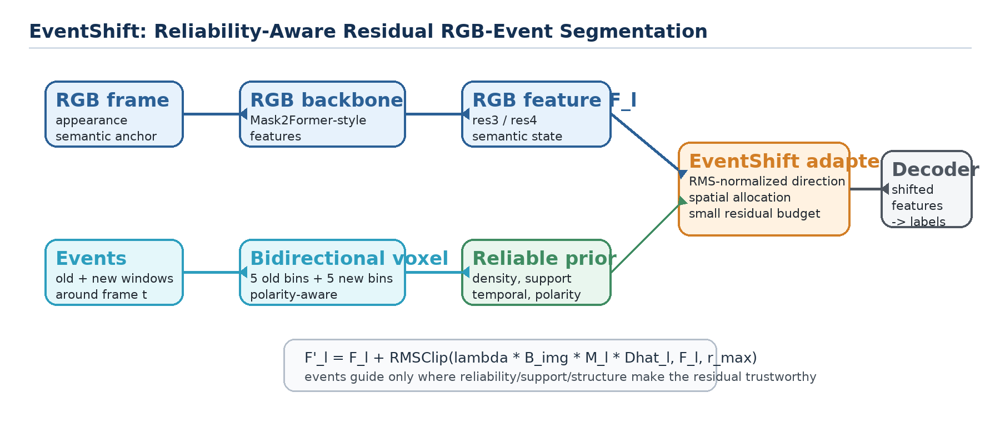
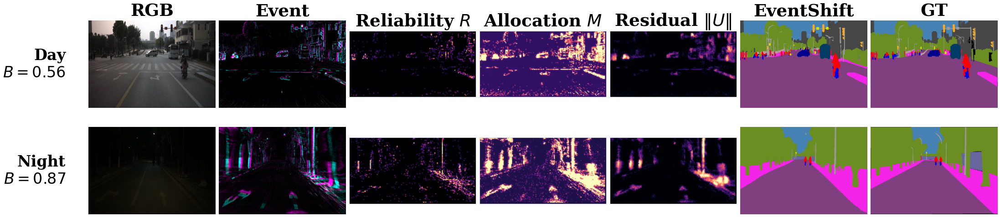
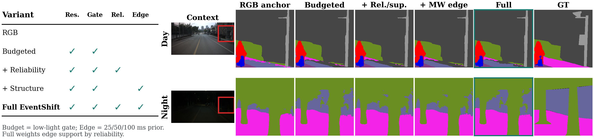
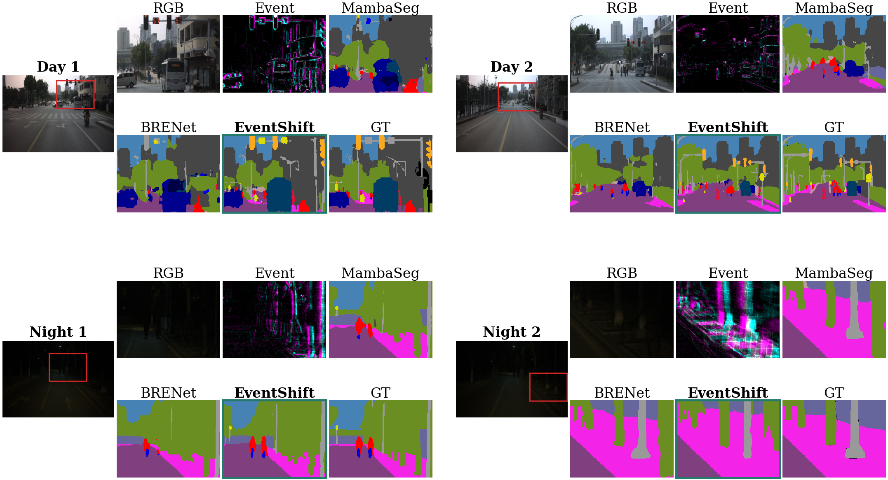

01 · Problem
The modality worth trusting changes with the light.
RGB carries stable appearance semantics in daylight. Events reveal motion and boundaries when frames go dark. Treating both as equally authoritative all the time creates the wrong trade-off.
Protect the RGB anchor.
Raw event activity is abundant even in daylight, but it is not uniformly useful for semantic decisions. Strong fusion can fragment small or appearance-heavy classes.
55.03matched RGB day mIoU
Spend event evidence selectively.
When RGB visibility falls, reliable event structure becomes valuable. The model should increase correction without giving the event stream an unrestricted semantic path.
+4.58night mIoU with EventShift

02 · Method
Three controls bound event authority.
EventShift changes one RGB feature state through a small residual update. The correction is governed at the image, spatial, and feature-magnitude levels.
When
An image-level low-light budget reduces correction in bright, high-contrast frames and opens more capacity when RGB evidence weakens.
Where
A learned allocator is biased by density, temporal balance, polarity balance, support, and multi-window edges.
How much
RMS normalization and clipping explicitly cap each sample’s residual relative to the RGB feature scale.

03 · Evidence
The same adapter behaves differently by illumination.
Switch between the measured day and night cases. The low-light budget and realized residual both rise when the RGB frame becomes less reliable.
Conservative by day
RGB already carries a useful scene representation, so EventShift spends a smaller correction budget.
Low-light budget0.56
Residual / RGB RMS4.1%

04 · Results
Night improves without collapsing day.
The main evidence is a matched-backbone CoSEC19 ablation: every row uses the same Swin-L Mask2Former backbone, split, and training recipe.
Matched RGB vs. full EventShift
mIoU under the same CoSEC validation protocol.
Shared 0–60 mIoU scale.
Bound the residual first; then spend it where event evidence is trustworthy.
Over bundled residuals, MW edge alone adds +1.56 and reliability/support adds +1.76 D–N average points; full EventShift reaches +1.78. The priors overlap, so their gains should not be read as independent or additive.
| Variant | Event use | Overall | Day | Night | D–N Avg. |
|---|---|---|---|---|---|
| RGB continuation | none | 55.15 | 55.03 | 46.81 | 50.92 |
| Input RGB + event | input | 52.20 | 52.13 | 46.61 | 49.37 |
| Naive event adapter | direct | 52.11 | 51.97 | 47.13 | 49.55 |
| Bundled residual | bounded | 55.15 | 54.93 | 47.77 | 51.35 |
| + MW edge | edge prior | 55.03 | 54.84 | 50.98 | 52.91 |
| + reliability/support | allocation | 55.09 | 54.86 | 51.36 | 53.11 |
| Full EventShift | bounded + all priors | 55.10 | 54.87 | 51.39 | 53.13 |
2nd41.11 mIoU
The challenge entry is a separate composite system built on the same reliability-aware residual principle. Its aggregate also includes the REAL subset, so it is context—not a direct comparison with the controlled CoSEC-only study.
Matched-schedule improvement
78.3679.70
mIoU on a separately trained internal validation split—not zero-shot transfer. Pixel accuracy also rises from 95.33 to 95.73 under the matched schedule.
How to read these results
- Primary causal evidence: the matched Swin-L fusion ablation above.
- Cross-architecture comparisons: useful context, but backbones, parameter counts, initialization, and source taxonomy differ.
- Overall mIoU: recomputed from pooled confusion, so it is not the arithmetic mean of day and night.
- Adapter size: 0.47M parameters, or 0.22% of the 215.93M-parameter model.
05 · Qualitative
Inspect what the correction changes.
The visual evidence focuses on the same matched mechanism: keep daytime semantics intact while recovering supported nighttime structure.


06 · Scope
Strong evidence, with clearly bounded claims.
The paper treats EventShift as a design principle supported by controlled experiments—not as a universal guarantee across every sensor, split, or deployment regime.
Controlled validation split
CoSEC uses 2,236 training and 327 validation samples. It supports controlled diagnosis rather than an official sequence-disjoint benchmark.
Proxy and ablation limits
The reliability prior is an uncalibrated deterministic proxy, and the individual contribution of res3 versus res4 injection is not isolated.
Fixed-latency representation
The symmetric multi-window tensor uses up to 100 ms look-ahead. Strictly causal deployment calls for past-only windows and an explicit latency–accuracy study.
Read the full study.
Definitions, implementation settings, class-level failures, challenge context, DSEC11 protocol, and complete qualitative evidence are documented in the final author version.